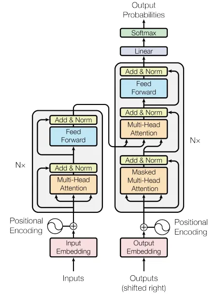
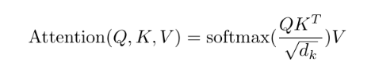

前言：改變 AI 歷史的革命
你是否好奇過，像 ChatGPT 這樣的 AI 是如何能像人類一樣，看一眼句子就能懂所有含義？這一切都源於 2017 年的一項傳奇論文《Attention Is All You Need》。本文將以直覺的比喻與嚴謹的邏輯，帶你一步步拆解這項改變世界的架構。
一、介紹 Transformer 演算法
1. 拋棄過去的累贅：為什麼我們需要 Transformer？
在 Transformer 問世之前，AI 閱讀文字就像是傳統的循環神經網路（RNN）。你可以想像這是一個「逐字抄寫員」。抄寫員在抄寫一個句子時，必須讀完第一個字，把它的記憶傳遞給下一個字，再讀第二個字... 這導致速度非常慢，完全浪費了現代 GPU 強大的算力。
2017 年，Google 團隊發表了 Transformer 架構。它大膽地拋棄了傳統的循環結構，轉而使用注意力機制（Attention Mechanism）。它不再逐字閱讀，而是一口氣將整句話輸入模型。這種「全景式」的處理能力，徹底解決了長距離依賴問題。
2. 聚焦的魔法：自我注意力機制 (Self-Attention)
想像你正身處一個吵雜的酒會中，雖然周遭充滿雜音，但當角落有人提到你的名字，你的大腦會立刻將聽覺焦距「對焦」到那個對話上。自我注意力機制做的事情一模一樣。當模型在理解一個單字時，它會看句子裡的其他單字，計算出哪些單字與當前單字關聯度最高，進而給予更高的「注意力權重」。

3. 超能力觀察團：多頭注意力機制 (Multi-Head Attention)
但如果只使用一種思維去理解句子，可能會錯失細節。Multi-Head Attention 就是同時初始化多個不同的「注意力觀察頭」。每個「頭」獨立地在不同方面學習語意特徵（例如有人看主詞、有人看時態），最後再將觀察結果匯聚成全面的含義。
4. 給單字發號碼牌：位置編碼 (Positional Encoding)
因為 Transformer 是一口氣把所有單字丟進模型做平行運算，模型會失去對「順序」的感知。為了打破無序性，我們必須在單字進入注意力機制之前，給它們發一張「時間與空間號碼牌」。這就是位置編碼（Positional Encoding），幫助模型區分 "Dog eats fish" 和 "Fish eats dog" 的差別。
5. AI 大師的誕生：完整架構解碼 (Encoder & Decoder)
經典的 Transformer 由兩大主體構成：一個負責「理解與消化」的工廠編碼器（Encoder），與一個負責「生成與翻譯」的工廠解碼器（Decoder）。
接下來，我們攤開 2017 年《Attention Is All You Need》論文中的經典架構圖，可以將這兩座工廠的運作邏輯進一步拆解為四大核心區塊：

架構圖深度解析
- 1. 資料輸入與位置編碼（底部）：
- Input / Output Embedding： 負責將文字序列轉換成機器能理解的高維度數學向量。
- Positional Encoding： 在向量進入模型前發放「號碼牌」，打破矩陣平行運算造成的無序性，標示精確順序。
- 2. 編碼器 Encoder（左側大框）：
- Multi-Head Attention： 模型在這裡計算句子內部單字之間的關聯性，理解全局上下文。
- Add & Norm 與 Feed Forward： 結合「殘差連接」與「層標準化」防止梯度消失，並透過前饋神經網路強化特徵。此區塊會重複堆疊 N 次加深理解。
- 3. 解碼器 Decoder（右側大框）：
- Masked Multi-Head Attention： 帶有「遮罩」的自我注意力層。強迫模型預測時只能參考過去已生成的詞彙，不能「偷看」未來。
- Cross-Attention（中間橘色區塊）： Decoder 在生成文字時，會透過這個橋樑不斷地「回頭查閱」Encoder 整理好的語意重點矩陣。
- 4. 輸出預測（頂部）：
- Linear & Softmax： 當 Decoder 完成所有運算後，最終矩陣會轉換為「機率分佈」，模型藉此挑選出機率最高的字作為下一個生成的單字。
6. 核心運作密碼：Query、Key、Value 的三位一體
在理解了自我注意力機制的宏觀概念後，模型在底層到底是如何具體計算出「注意力權重」的？這就要歸功於 Transformer 中最精妙的數學設計：Query（查詢）、Key（鍵值） 與 Value（數值）。
為了讓這三個抽象的向量變得容易理解，科學家常用「影音平台搜尋」或「圖書館查書」來做生動的比喻：
- Query (Q) — 「你的搜尋關鍵字」： 代表當前模型正在處理、試圖理解的那個單字。它就像你在 YouTube 搜尋框輸入的字串。
- Key (K) — 「影片的標題與標籤」： 代表句子中所有單字的特徵檔案。模型會拿當前的 Query 去跟句子中每一個單字的 Key 進行相似度比對。
- Value (V) — 「影片的實際內容」： 代表單字本身所蘊含的真正語意資訊。一旦 Query 與某個 Key 對上了，模型就會提取對應的 Value。
在實際的矩陣平行運算中，這三個向量會套用論文中定義的經典公式：「縮放點積注意力 (Scaled Dot-Product Attention)」。

這個看似充滿數學符號的公式，其實可以精密地拆解為以下四個步驟，最終提煉出上下文精華：
自我注意力（Self-Attention）矩陣運算四部曲
- 步驟一：相似度比對 (Dot Product)
拿當前單字的 Q 向量，去跟句子中所有單字的 K 向量做內積（點積）運算，算出兩者之間的原始關聯分數。分數越高，代表兩個字在語意上越相關。 - 步驟二：穩定縮放 (Scaling)
將算出來的分數除以 √d_k （d_k 為 Key 的向量維度）。這是為了防止當向量維度過高時，點積數值過大，導致後續梯度不穩定。 - 步驟三：歸一化分佈 (Softmax)
將縮放後的分數通過 Softmax 函數，將它們轉換為範圍在 0 到 1 之間、且加總絕對等於 1 的「注意力權重百分比」。這也就是我們常看到的注意力熱力圖。 - 步驟四：加權總和 (Weighted Sum)
用這些百分比權重作為係數，去乘以各個單字對應的 V 向量並全部加總。最終產出的全新向量，就是一個完美融合了周圍上下文語意的超強特徵表示！
二、Transformer 的跨界宇宙與衍生模型
掌握了 Transformer 的核心積木與精妙的「雙工廠架構」後，你可能會好奇：這套理論在現實中到底造就了哪些厲害的 AI 應用？
自 2017 年論文發表以來，科學家們發現這套架構簡直是無所不能的「樂高積木」。透過自由拆解、重組或瘋狂放大編碼器（Encoder）與解碼器（Decoder），繁衍出了一個極其龐大的 AI 模型家族。更令人驚訝的是，它不再侷限於「閱讀文字」，而是跨越了感官的界線，成為統一天下演算法的霸主。接下來，我們將走進這個多姿多彩的 AI 家族，看看 Transformer 如何在各個領域掀起革命。
1. 語言的極致煉金術：大語言模型 (LLM)
這類模型是將解碼器（Decoder）架構發揮至極致的產物，專精於文字接龍與深度推理，也是 Transformer 演算法中最廣為人知的代表。如今，它已深深融入你我的日常生活；無論是面對學習、創作，還是探討各種日常問題，許多人不再優先詢問老師或同學，而是轉向 AI 尋求解答。我們目前最常使用的 AI 助手，幾乎皆屬於此一類型。
🌟 代表模型：
OpenAI 的 GPT-4、Anthropic 的 Claude 3、google 的 Gemini，以及 Meta 的開源巨頭 Llama 3。
2. 視覺的全新維度：電腦視覺 (Computer Vision)
過去由卷積神經網路（CNN）統治的圖像領域，如今也被 Transformer 攻破。它將圖片切成無數個「小拼圖（Patches）」，讓 AI 像閱讀單字一樣去理解圖像中不同區塊的關聯性。
🌟 代表模型：
Google 的 Vision Transformer (ViT) 以及微軟的 Swin Transformer。
3. 預見未來的先知：時間序列分析 (Time Series Forecasting)
透過強大的長距離注意力機制，捕捉數據隨時間變化的週期與趨勢。這項技術極其適合應用於氣象預報、電網負載分析，甚至是台股市場的 AI 即時選股策略與個人資產預測。
🌟 代表模型：
Informer、Autoformer 與 PatchTST。
4. 傾聽世界的耳朵：語音與音訊處理 (Audio & Speech)
將聲波訊號轉換為特徵序列，讓模型不僅能精準將語音轉譯為文字，還能聽懂語氣、情緒與多國語言的切換。
🌟 代表模型：
OpenAI 的 Whisper（最強大的開源語音辨識模型）與 Meta 的 HuBERT。
5. 跨越感官的創世神：多模態與影像生成 (Multimodal & Generative AI)
結合了文字與視覺，讓 AI 能夠理解「文字指令（Prompt）」並無中生有地創造出高畫質圖片或物理世界流暢的影片，將人類的「詠唱」變為現實。
🌟 代表模型：
影片生成模型 Sora、圖像生成模型 DALL-E 3 與 Midjourney。
6. 解開生命密碼的鑰匙：科學研究 (AI for Science)
運用空間位置編碼與注意力機制，精準預測氨基酸序列如何摺疊成 3D 蛋白質結構，把原本需要耗費數年的生物學實驗縮短至幾分鐘。
🌟 代表模型：
DeepMind 的 AlphaFold 3。
三、未來趨勢
1. 擺脫算力巨獸：邊緣運算與輕量化
未來的 AI 不會只存在於巨大的雲端機房。目前的趨勢是將龐大的 Transformer 模型進行「量化（Quantization）」與「剪枝（Pruning）」，發展出輕量級語言模型（SLM）。目標是讓強大的 AI 能夠直接在手機、筆記型電腦，甚至是微控制器（如 Arduino 等硬體設備）上離線且即時運行。
2. 無限記憶的挑戰：超長上下文窗口
早期的模型只能記住幾千個字，但現代 AI 正試圖吞下整座圖書館。未來的技術將致力於突破注意力機制中「運算量呈二次方增長」的物理瓶頸（例如發展 Linear Attention 或 Mamba架構），讓模型能夠一次性讀完數百萬字、整份財報或超長篇的程式碼專案而不會遺忘。
四、反思
1. 昂貴的智慧：算力霸權與環境隱憂
訓練先進的 Transformer 模型需要成千上萬張高階 GPU 日以漸夜地運轉。這不僅讓頂尖 AI 的開發成為少數科技巨頭的「資本遊戲」，其背後消耗的龐大電力與水資源也帶來了不容忽視的環境碳排放問題。我們必須思考：在追求極致效能的同時，如何讓 AI 變得更節能？
2. 黑盒子裡的幽靈：AI 幻覺與可解釋性
儘管注意力機制能生成邏輯嚴密、流暢優美的文字，但 Transformer 本質上仍是基於機率分佈的「黑盒子」。它有時會無中生有，產生「一本正經胡說八道」的 AI 幻覺（Hallucination）。我們依然難以完全透視它內部決策的邏輯，這在醫療、法律等要求絕對精準的領域，仍是一大隱患。
附錄：期末 AI 輔助學習歷程報告
本區塊為呼應期末評量任務要求，記錄本次探索 Transformer 演算法的真實學習軌跡、AI 協作過程與反思。
AI 輔助學習紀錄
在理解高度抽象的注意力機制時，單看數學公式難以立刻吸收，因此我請 AI 擔任「概念轉譯者」。
與 AI 的關鍵對話對話摘要
- 我的問題：「請用大學生能聽懂的日常例子，向我解釋 Transformer 中的 Query, Key, Value 矩陣到底是什麼關係？不要只給我數學公式。」
- AI 的回答重點：AI 提出了「YouTube 影音平台搜尋」的比喻。Query 是我在搜尋框輸入的「關鍵字」，Key 是資料庫裡每部影片的「標題與標籤」，Value 則是「影片的實際內容」。
- 對我的幫助：這個比喻瞬間打破了數學矩陣的抽象感，讓我立刻理解為什麼這三個矩陣需要分開訓練，以及它們在注意力機制中的協作關係，幫助我順利寫出專欄中的核心段落。
查證與修正
在使用 AI 輔助學習時，為了確保技術文章的學術嚴謹性，我針對 AI 提供的概念進行了原典查證。
查證紀錄：Scaled Dot-Product Attention 公式
- 查證動機：AI 雖然給了很好的生動比喻，但身為資工系學生，我認為技術專欄不能只有文字，必須有嚴謹的數學依據。
- 查證過程：我親自去研讀了 2017 年《Attention Is All You Need》原始論文，在第 4 頁找到了真實的數學公式：
Attention(Q,K,V) = softmax(QK^T / √d_k)V。 - 修正與優化：我確認了 AI 的比喻與公式邏輯完全吻合。隨後，我將原始論文的公式截圖補充到了我的網頁「核心運作密碼」段落中，並自行補上了「除以 √d_k 是為了防止梯度消失」的專業說明，彌補了 AI 原本只有純文字比喻的不足。
結合自身專案的應用案例
除了常見的 ChatGPT (LLM) 應用，我更將 Transformer 的概念延伸到我個人正在開發的專案中：
台股 AI 選股與個人資產 APP (開發中)
我目前正在開發一款針對台股市場的應用程式。在學習了 Transformer 的「時間序列分析 (Time Series)」衍生模型（如 Informer 或 PatchTST）後，我發現其強大的長距離注意力機制，非常適合用來捕捉股票歷史價格、成交量與籌碼面數據的長短期週期變化。相較於傳統的 LSTM，Transformer 架構能更精準地進行個人資產預測與 AI 驅動的選股策略。
個人學習反思
這次的專題不僅是學習一個演算法，更是體驗一種全新的學習模式。
- AI 對學習的幫助：在前端實作上，AI 幫助我大幅縮短了 JavaScript 的開發時間（如實作滑鼠 hover 單字的互動特效）。在理論學習上，AI 就像一位隨叫隨到的家教，幫我把艱澀的論文語言「降維打擊」成人類語言。
- AI 回答的限制：AI 很容易為了「討好」使用者而給出看似通順但缺乏深度的答案。如果我不主動追問底層邏輯，或是自己去查閱論文，很容易只學到皮毛。
- 真正學到了什麼：我不僅徹底搞懂了 Self-Attention 的運作原理，更學會了如何「與 AI 協作」。我負責規劃架構、定義比喻邏輯、查證公式與撰寫程式邏輯，而 AI 負責幫我加速產出與優化語句。這讓我體會到，未來的工程師價值不在於死記硬背，而在於「架構思維」與「查證能力」。
五、結語
1. 站在巨人的肩膀上
Transformer 並不是一顆憑空掉下來的隕石，它是建立在神經網路、詞向量、循環神經網路等無數前人研究的基礎上。然而，它卻以最優雅、最直覺的「注意力機制」，一語道破了人類閱讀與理解資訊的奧秘。
2. 迎接 AGI 的曙光
從 BERT 的神級閱讀理解，到大語言模型顛覆世界的生成能力，再到如今預測蛋白質結構的 AlphaFold。Transformer 用事實向人類證明了：只要架構正確，配合海量的資料與算力，AI 就能產生近乎人類智慧的泛化能力。它不僅僅是一個劃時代的演算法，更是人類通往通用人工智慧（AGI）道路上，最耀眼也最堅實的一座黃金橋樑。